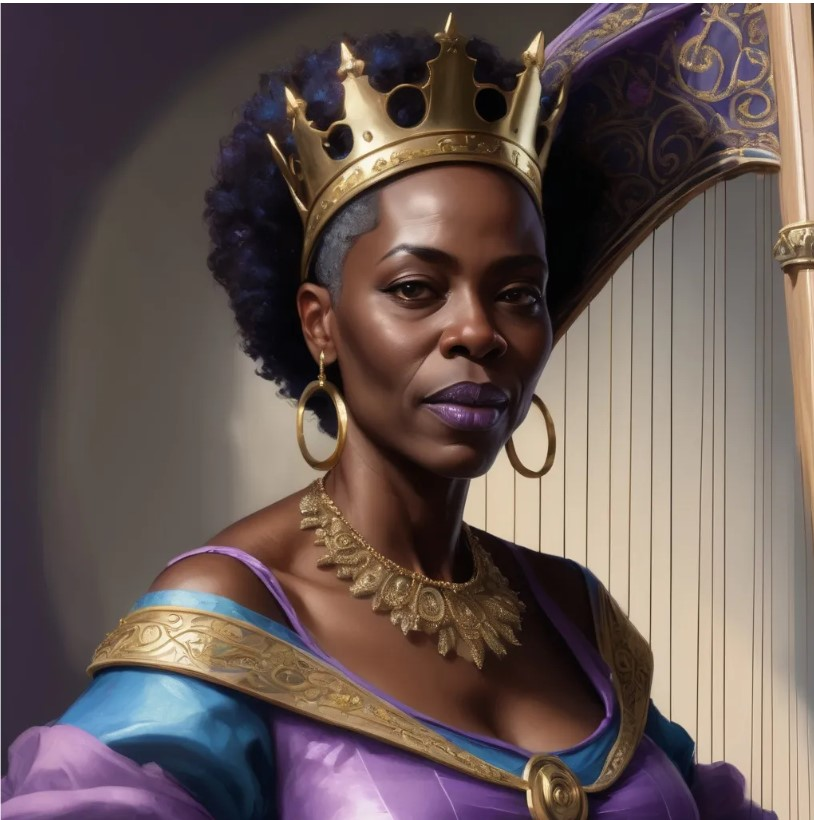

King Kunle
My name is Kunle and I am the King. I like karate and kitesurfing. My son Prezley is the heir to the throne.
Queen Qadirah
My name is Qadirah and I am the Queen. I like quizzes and quail. Click here to see my favourite quail recipie.
Prince Prezley
My name is Prezley the Prince. I like pictures and pizza. Follow me on Instagram @pengprinceprez.
Princess Pricilla
My name is Princess Pricilla. I like lots of things...
- Pink Lady Apples
- Peanut Butter
- Ponies
- Polly Pocket
Sade
I am King Kunle's Mistress and Mother to the illegitimate Princess Pricilla.